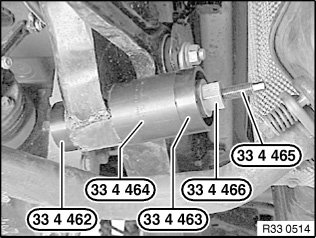
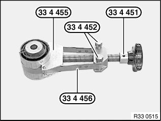
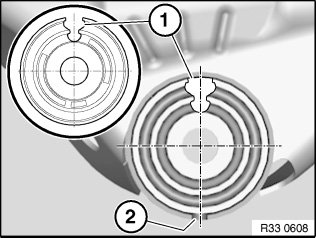
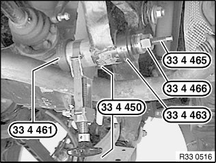

Control Arm Bushing: Service and Repair
33 32 195 Replacing rubber mount for camber arm in rear axle supportSpecial tools required:
Warning!
Risk of burns!
This work may only be carried out on an exhaust system which has cooled down.
Necessary preliminary tasks:
^ Remove coil spring
^ Remove camber arm from rear axle support

Removing rubber mount:
Pull out and remove rubber mount with special tools 33 4 462, 33 4 464, 33 4 463, 33 4 466 and 33 4 465.

Installing new rubber mount:
Pull together rubber mount with special tools 33 4 455, 33 4 456, 33 4 452 and 33 4 451.

Draw rubber mount into rear axle support so that slot (1), rubber mount center point and notch (2) form a line.

Draw rubber mount into rear axle support as far as possible using special tools 33 4 461, 33 4 463, 33 4 466 and 33 4 465.
Remove special tool 33 4 450 and draw in rubber mount as far as it will go.
After installation:
^ Perform wheel/chassis alignment check